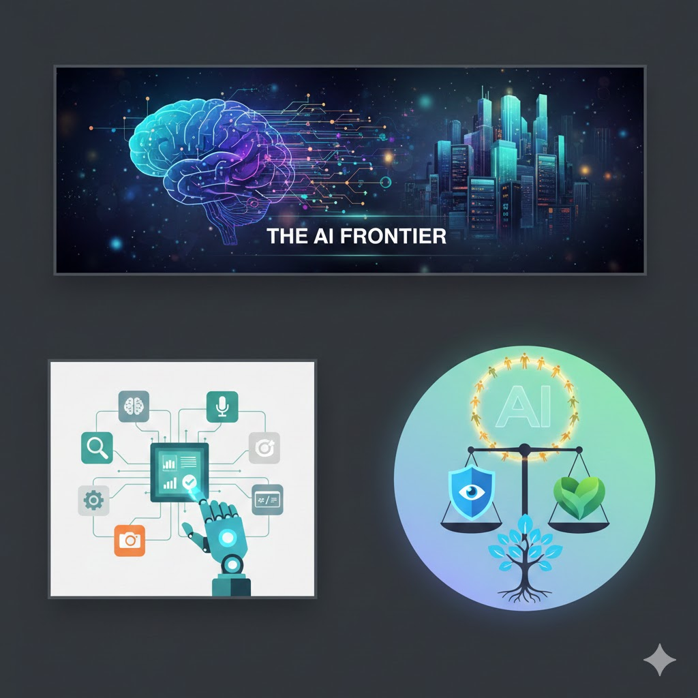

How AI Writing Tools Are Changing the Revision Process for Students
January 30, 2026
AI writing tools such as ChatGPT are increasingly being used not just for drafting text, but for revising and improving student writing. Instead of acting as answer generators, these tools are becoming revision assistants that help users refine clarity, structure, and tone.
Recent updates to ChatGPT's writing-focused features allow users to request feedback on grammar, organization, and argument strength without rewriting the content automatically. Students can ask the AI to explain why a sentence is unclear or suggest alternative phrasing while keeping the original meaning intact.
This development is significant because revision is one of the most challenging stages of writing. Many students struggle to identify weaknesses in their own work, especially after reading the same draft repeatedly. AI tools provide immediate, low-pressure feedback that can supplement instructor comments and peer review.
The trend reflects a broader shift in education toward responsible AI use. I chose this topic because it demonstrates how AI can support learning while still prioritizing student authorship and critical thinking.
AI-generated image representing AI writing assistance tools.
Recent AI image tools integrated into platforms such as ChatGPT allow users to generate illustrations based on text prompts. These images can then be downloaded and uploaded to GitHub repositories, where they are displayed using standard HTML image tags. This workflow allows students to maintain full control over their site structure while enhancing visual presentation.
The process typically involves uploading the generated image directly into the root directory of a GitHub Pages site and referencing the file within an individual post. Because GitHub Pages supports static assets by default, no additional plugins or scripts are required.
This development reflects a broader trend in applied AI education, where students are expected to deploy AI-generated content in real-world contexts. As AI-generated media becomes more common, understanding how to integrate it responsibly is becoming an essential digital skill.